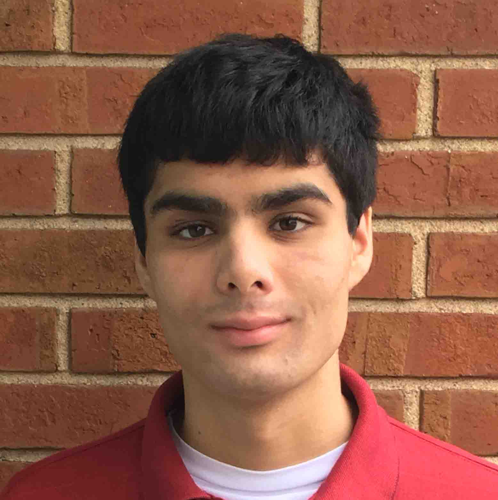

TOMOKI POTH
FRONT-END DEVELOPER
About Me
Hi, I'm Tomoki Poth.
I am Tomoki Poth but I usually go by Tommy. I am a web designer and recent graduate. I am eager to gain entry into the web design world. With my current skill set, I can create responsive, dynamic websites. I like to tinker with Adobe programs and invent vector style graphics. I enjoy organizing digital content by using HTML and CSS to create beautiful and appealing designs. Additionally, I have worked some with SASS styling. Photoshop and Illustrator are my strongest creative programs and using their tools to design new graphics is one of my favorite things about this field. I also do some programming, and have some familiarity with Javascript. The work highlighted in my portfolio was mostly created while I was attending St. Charles Community College, with a few bits created for personal enjoyment.
When I am not creating web designs, I spend time with my family and cat named Princess. I grew up in a multicultural unique household as both of my parents are from different countries. With this comes a functional fluency in Japanese, which I use daily with my parents. I also enjoy playing video games and consume media in both Japanese and English regularly.
While actively pursuing my degree in Web Design, as well as since I have obtained it, I have been working for the past 3 years at a large retail chain. From my work experience, I have learned a lot about how to provide good customer service. I am able to work efficiently both independently and in team scenarios. With my experience in a fast-paced setting, I am confident that I will be able to meet deadlines. I know that the skills I have obtained from working in this setting are desirable assets for any employer.
HTML/CSS
I am familiar with using HTML and CSS to create and style webpages. I can comfortably use both to effectively design new pages as well as update existing ones.
Graphic Design
I have experience with both Photoshop and Illustrator, and can use both to create uniquely designed logos, icons, and other graphics. Below are a few of the preliminary logo designs for a website that will be deployed later this year.
Technical Writing
My specialty in writing is in technical and formal discourse. I can analyze information and present it in writing that is often easy to understand and follow.
Previous Classwork
As a current student, I have created a number of webpages for assignments. The following are screenshots of some of my projects at St. Charles Community College.
Each image is also a link that will open a demo page in a new tab.
With each project, I attempted to keep with a certain theme, and as I personally prefer dark background, that tends to be what I gravitate towards when designing a page. I always design every element of a page with a theme in mind, and this is what I hope to be able to improve as I continue to learn new things in this field.
To me, the logo is the webpage.When designing a page, I am asking a client what they want to do with that page, and a logo can entirely encapsulate that idea. I believe working outwards from existing assets is the first crucial step in designing a webpage.
I take colors and ideas from existing assets and determine how they can be used to style a webpage. I start from scratch, working from top to bottom, keeping the theme consistent throughout. The goal is always to keep it from becoming to bloated, ugly, or difficult for the end user, while still making something that looks nice. A webpage lives and dies on its look and functionality, and finding ways to appeal to both aspects while maintaining a good balance is both a challenge and a treat.
Solar Eclipse 2017
This first example of student work is a webpage about the eclipse that occurred last year. It was a group project, and I worked on most of the outward visual design, while my teammates created most of the written content.
With this project, I attempted to follow a theme of night and darkness. Every color here was picked because it follows that theme. From the night-sky background to the image content itself, the page was explicitly designed to convey that idea.
I created the header image with Photoshop, and it "gradients out" into the element's background color.
The buttons here are supposed to be like the moon covering the sun during the eclipse.
In short, this is an extremely early example of my thematic styling. It's very basic, but it illustrates some of the ideas I would have later.
Skyrim
My second example is a webpage I created for a video game called Skyrim. In Skyrim, you play as an adventurer in a fantasy medieval world.
The user interface in Skyrim features a slightly transparent black background with arrows that appear on selected items. I attempted to use this design on a website. Nav links feature a arrow hover image, which works like it would in the Skyrim UI. The game also features some cursive fonts, which I pay homage to in my headers.
Using a recording softwre and Photoshop, I was able to create a vertical panorama of one of the in-game settings.
I also experimented with box-shadows here, which I used because it looks better to have some transition between the image and the transparent background. This was my first project to use a responsive grid, which allowed me to place items more deliberately.
Webpage Template
The last of the three school projects I'll be showing off here is my website template. This was my introduction to SASS/SCSS styling, which has made creating webpages much easier and quicker. In fact, this portfolio website is based on some of the code from this template project.
This SASS template also uses css grid, which I iterated upon and improved to more closely fit my needs. By reducing margins and taking most of the styling out of the column and column width classes, I was able to create more interesting displays by instead adding more classes to html elements. This allowed me to set up a number of shortcuts in my code that gave more room for unique styling of individual elements.
This portfolio is the product of everything I learned by creating a proper template page, and incorporates much of the knowledge I gained tweaking this older template.
Team Project Website
This is the final result of our class project to redesign a website for a computer science organization. The Organization is called CCSC, which stands for the Consortium for Computer Sciences in Colleges. This is a group that hosts yearly conventions for computer science teachers in the central plains region of the US.
The redesign overhauled the look of the entire site using Avada as the building base. This project was made in Wordpress, and we coordinated using Asanato manage individuals and assign tasks.
Our class spent most of the last semseter working on this website, which will be deployed some time in the next year. It is the first website that I have participated in creating that will be hosted online.
I personally was assigned to do the icon and logo work. Here youc an see much of the work that went into designing the logos and icons.